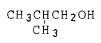
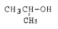
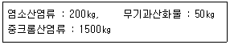

위험물산업기사 (2004-05-23 기출문제)
1과목: 일반화학
1. "두 가지 기체가 퍼지는 확산속도는 그 기체의 밀도(분자량)의 제곱근에 반비례한다."라는 법칙과 연관성이 있는 것은?
- 미지의 기체 분자량을 측정에 이용된다.
- 보일-샤를이 정립한 법칙이다.
- 기체상수 값을 구할 수 있다.
- 기체상태방정식으로 표현된다.
(정답률: 59%)

2. 다음 중 원자핵을 구성하는 물질이 아닌 것은?
- 전자
- 양성자
- 중간자
- 중성자
(정답률: 44%)
3. pH = 9인 NaOH 용액 10L 중에 Na+ ion의 수는 몇개인가 ?
- 3.01 × 1020개
- 6.02 × 1020개
- 3.01 × 1022개
- 6.02 × 1019개
(정답률: 44%)
4. 다음 산화물중 염기성 산화물에 해당되는 것은?
- ZnO
- Al2O3
- CO2
- CaO
(정답률: 44%)
5. 콜로이드의 엉김(coagulation)을 일으키는데 효과가 가장 큰 것은?
- NaCl
- Al2(SO4)3
- BaCl2
- CaCl2
(정답률: 56%)
6. 노란색(황색)의 불꽃반응을 나타내며, 수용액에 AgNO3용액을 넣었더니 흰색침전이 생겼다. 이 물질은 무엇인가?
- NaCl
- BaCl2
- CuSO4
- K2SO4
(정답률: 84%)
7. 백금 전극을 사용하여 NaOH 수용액을 전기 분해할 때 +극에서 5.6L의 기체가 발생하는 동안 (-)극에서 발생하는 기체의 부피는?
- 5.6L
- 11.2L
- 22.4L
- 44.8L
(정답률: 66%)
8. 다음 중 CO2가스의 건조제로 사용할 수 있는 것은?
- CaO
- NaOH
- H2SO4
- KOH
(정답률: 48%)
9. 탄소수가 5개인 포화탄화수소 펜탄의 구조이성질체 수는 몇 개인가?
- 2개
- 3개
- 4개
- 5개
(정답률: 79%)
10. FeCl3의 존재하에서 톨루엔과 염소를 반응시키면 어떤 물질이 생기는가?
- O-클로로톨루엔
- p-살리실산메틸
- 아세트아닐리드
- 염화벤젠디아조늄
(정답률: 64%)
11. 산칼륨의 용해도는 10[℃]에서 20, 100 [℃]에서 247이다. 100[℃]에서 100[g]의 물에 질산칼륨을 포화시킨후 10[℃]로 냉각시키면 몇[g]의 질산칼륨의 석출되는가?
- 127[g]
- 147[g]
- 227[g]
- 267[g]
(정답률: 52%)
12. pH가 2 인 용액은 pH가 4인 용액의 수소이온농도와 비교하여 몇 배의 용액이 되는가?
- 100배
- 10배
- 5배
- 2배
(정답률: 81%)
13. 알코올을 산화하면 알데히드가 생성된다. 이 때 알데히드를 얻을 수 없는 알코올은?
- CH3CH2OH


- CH3CH2CH2OH
(정답률: 46%)
14. 기체 암모니아를 27℃, 760㎜Hg에서 용적을 측정한 결과 800mL였다. 이것을 100mL의 물에 전량 흡수시켜 암모니아수용액을 만들 경우 NH3의 중량% 와 수용액의 몰은 얼마 인가? (단, NH3 분자량 17g이다.)
- 6.7%, 2M
- 0.5525%, 0.325M
- 0.607%, 0.357M
- 5.5%, 3M
(정답률: 47%)
15. 크세논(Xe)화합물에 대한 설명이다. 잘못 설명된 것은?
- Xe[PtF6]는 오랜지색의 고체이다.
- XeF4는 무색의 고체로써 상온에서 안정하다.
- XeF4는 0℃의 저온에서 2F2 와 Xe로부터 생성된다.
- XeF4는 불화수소에 녹으며 수소와 고온에서 반응한다.
(정답률: 38%)
16. 다음 중 양쪽성 산화물인 것은?
- NO2
- Al2O3
- MgO
- SO2
(정답률: 75%)
17. 다음 중 비극성 분자는 어느 것인가?
- HF
- H2O
- NH3
- CH4
(정답률: 52%)
18. 다음은 이온결합 물질의 성질에 관한 설명이다. 틀린 것은?
- 녹는점이 비교적 높다.
- 단단하며 부스러지기 쉽다.
- 고체와 액체 상태에서 모두 도체이다.
- 물과 같은 극성용매에 용해되기 쉽다.
(정답률: 69%)
19. 다음 물질 중에서 은거울 반응과 요오드포름 반응을 모두 할 수 있는 것은?
- CH3OH
- C2H5OH
- CH3CHO
- CH3ClOCH3
(정답률: 74%)
20. KMnO4에서 Mn의 산화수는?
- +5
- +6
- +7
- +8
(정답률: 88%)
2과목: 화재예방과 소화방법
21. 분말 소화약제의 가압용 및 축압용 가스는?
- 네온가스
- 프로판가스
- 수소가스
- 질소가스
(정답률: 77%)
22. NaHCO3 A(외약)약제와 AI(SO4)3 B(내약)약제로 되어 있는 소화기는?
- 산,알칼리소화기
- 드라이켈미칼소화기
- 탄산가스소화기
- 포말소화기
(정답률: 42%)
23. 제5류 위험물의 특징에 대한 설명으로 옳은 것은?
- 자기반응성 유기질화합물로 자연발화의 위험성을 갖는다.
- 무기 화합물로 가열, 충격, 마찰에는 위험성이 없다.
- 자기 반응성 무기화합물로 직사일광에는 자연발화가 일어나지 않는다.
- 자기반응성 유기질화합물로 연소가 잘 일어나지 않는다.
(정답률: 74%)
24. 유기과산화물의 화재 예방상 주의사항으로 옳지 않은 것은?
- 직사일광을 피하고 찬곳에 저장한다.
- 모든 열원으로부터 멀리한다.
- 환원제는 상관없으나 산화제와는 멀리한다.
- 용기의 파손에 의하여 누출 위험이 있으므로 정기적으로 점검한다.
(정답률: 83%)
25. 탄화칼슘 60,000㎏ 를 소요단위로 산정하면?
- 10 단위
- 20 단위
- 30 단위
- 40 단위
(정답률: 76%)
26. 부착높이가 4m 미만인 경우의 자동화재 탐지설비 감지기 종류가 아닌 것은?
- 차동식 스포트형
- 열복합형
- 이온화식 1종
- 보상식 스포트형
(정답률: 43%)
27. 간이 소화용구인 팽창질석은 삽을 상비한 경우 1 단위는 몇 L 인가?
- 70 L
- 100 L
- 130 L
- 160 L
(정답률: 78%)
28. 지정수량이 10배 이상인 위험물을 저장, 취급하는 제조소에 설치하여야할 설비가 아닌 것은?
- 휴대용메거폰
- 비상방송설비
- 자동화재탐지설비
- 무선통신설비
(정답률: 56%)
29. 점화원이 될 수 없는 것은?
- 산화열
- 전기불꽃
- 중화열
- 마찰에 의한 불꽃
(정답률: 71%)
30. 포 헤드가 장방형으로 배치된 경우에는 대각선의 길이 (pt)는 몇 m 이하가 되도록 설치 하여야 하는가? (단, 유효반경 r은 2.1m 이다.)
- 2.1 m
- 4.2 m
- 6.3 m
- 8.4 m
(정답률: 52%)
31. 사염화탄소 소화약제는 화염에 분해되어 맹독성의 가스가 발생하므로 사용하지 못하도록 하고 있다. 이 때 발생하는 가스는?
- COCl2
- HCN
- PH3
- HBr
(정답률: 55%)
32. 특수가연물을 저장, 취급하는 공장 또는 창고 등에 적응하는 포소화설비가 아닌 것는?
- 포워터스프링클러설비
- 포헤드설비
- 고정포방출설비
- 호스릴포설비
(정답률: 38%)
33. 다음 중 소방신호에 해당되지 않는 것은?
- 경계신호
- 발화신호
- 대피신호
- 훈련신호
(정답률: 27%)
34. 금속칼륨 화재시 가장 적절한 소화방법은?
- 사염화탄소
- 주수소화
- 마른모래
- 이산화탄소
(정답률: 76%)
35. 금속이 덩어리 상태일 때보다 가루상태일 때 연소위험성이 증가하는 이유로 볼 수 없는 것은?
- 표면적의 증가
- 겉보기 체적의 증가
- 비열의 증가
- 대전성의 증가
(정답률: 47%)
36. 분말소화약제의 식별색으로 옳게 짝지어 진 것은?
- BaCl2 : 분홍색
- KHCO3 : 회색
- NaHCO3 : 백색
- NH4H2PO4 : 보라색
(정답률: 67%)
37. 제1류 위험물의 화재 시 조치방법으로 옳지 않은 것은?
- 소화방법은 분해온도 이하로 냉각하는 주수를 사용한다.
- 가연물과 혼합하여 연소하는 경우는 접근하여 가연물과 분리한다.
- 소화작업시에는 공기호흡기, 보안경 등의 보호장구를 착용한다.
- 소량의 화재시에는 분말, 이산화탄소 등에 의한 질식소화도 효과가 있다.
(정답률: 42%)
38. 분말소화제의 소화효과를 가장 적당하게 설명한 것은?
- 연소물을 급격하게 냉각시켜 소화한다.
- 주로 화재의 열을 흡수하는 냉각효과가 있다.
- 열분해로 생긴 불연성가스에 의한 질식효과가 크며, 일부 냉각효과도 있다.
- 분말은 화재를 억제하고 열분해로 발생하는 탄산가스가 질식효과로 소화한다.
(정답률: 53%)
39. 스프링클러설비에 관한 설명으로 옳지 않은 것은?
- 초기화재 진화에 효과가 크다.
- 제4류 위험물에는 적응성이 없다.
- 감지부의 구조가 기계적이므로 오동작 염려가 적다.
- 폐쇄형 스프링클러 헤드는 그 자체가 자동화재탐지 장치의 역할을 할 수 있다.
(정답률: 39%)
40. 위험물에 대한 주된 소화방법이 잘못 짝지어진 것은?
- 제1류 위험물 : 냉각소화(일부 주수금지)
- 제2류 위험물 : 냉각소화(일부 주수금지)
- 제3류 위험물 : 질식소화
- 제5류 위험물 : 질식소화
(정답률: 64%)
3과목: 위험물의 성질과 취급
41. 다음 Na2O2의 설명 중 옳지 않은 것은?
- 흡습성이 강하고 조해성이 있다.
- 황산과 반응하여 과산화수소가 발생한다.
- 금, 니켈을 제외한 다른 금속을 침식하여 산화물로 만든다.
- 순수한 것은 백색이나, 일반적으로는 엷은 녹색을 띤 분말이다.
(정답률: 42%)
42. 다음 물질 중 오렌지색 또는 무색의 분말로 흡습성이 있으며 에탄올에 녹는 것으로서 물과 급격히 반응하여 발열하고 산소를 방출시키는 물질은?
- 과산화수소
- 과황산칼륨
- 과산화바륨
- 과산화칼륨
(정답률: 48%)
43. 다음 중 오황화린(P2S5)의 성질에 관한 설명이다. 옳은 것은?
- 물과 반응하면 불연성기체가 발생된다.
- 담황색 결정으로서 흡습성과 조해성이 있다.
- 황색의 결정으로 물, 황산 등에 녹지 않는다.
- 제3류 위험물이므로 공기중에서 자연발화한다.
(정답률: 60%)
44. 자연발화성 물질인 트리에틸알루미늄이 물과 접촉하면 어떤 가스가 발생하는가?
- C2H6
- CHI3
- CH4
- C2H2
(정답률: 44%)
45. 다음은 금속칼륨과 물이 반응하여 생성된 화학반응식을 나타낸 것이다. 옳은 것은?
- 산화칼륨 + 수소 + 발열반응
- 산화칼륨 + 수소 + 흡열반응
- 수산화칼륨 + 수소 + 흡열반응
- 수산화칼륨 + 수소 + 발열반응
(정답률: 60%)
46. 위험물을 운반할 때 혼재하여도 상관없는 것은?
- 1류와 2류
- 2류와 6류
- 3류와 5류
- 4류와 2류
(정답률: 75%)
47. 다음 위험물중 톨루엔에 질산, 황산을 반응시켜 생성되는 물질로서, 니트로글리세린과 달리 장기간 저장해도 자연분해 할 위험 없이 안전한 것은 무엇인가?
- C6H2(NO2)3OH
- (CH2)3(NO2)3
- C6H2CH3(NO2)3
- C6H3(NO2)3
(정답률: 46%)
48. CS2를 물속에 저장하는 주된 이유는 무엇인가?
- 불순물을 용해시키기 위하여
- 가연성 증기의 발생을 억제하기 위하여
- 상온에서 수소 가스를 방출하기 때문에
- 공기와 접촉하면 즉시 폭발하기 때문에
(정답률: 81%)
49. 다음 중 연소의 3요소와 관계 없는 사항은?
- 셀룰로이드
- 질산칼륨
- 마찰
- 대기압
(정답률: 58%)
50. 카아바이트와 물과 반응하여 발생하는 기체는?
- 과산화수
- 일산화탄소
- 아세틸렌가스
- 에틸렌가스
(정답률: 52%)
51. 소방법에 의한 위험물을 취급함에 있어서 발생하는 정전기를 유효하게 제거하는 방법으로 옳지 않은 것은?
- 인화방지망 설치방법
- 상대습도를 70%이상 높이는 방법
- 공기를 이온화하는 방법
- 접지에 의한 방법
(정답률: 65%)
52. 위험물 옥내 저장소의 피뢰설비는 지정수량의 몇 배 이상 인 경우 저장 창고에 설치해야 하는가?
- 10배이상
- 15배이상
- 20배이상
- 30배이상
(정답률: 72%)
53. 위험물을 폐기하는 작업에 있어서 취급기준이다. 옳지 않는 것은?
- 소각할 경우에는 안전한 장소에서 감시원의 감시하에 폐기하여야 한다.
- 위험물을 매몰시에는 위험물의 성질에 따라 안전한 장소에서 하여야 한다.
- 위험물을 해중 또는 수중에 투하할 경우에는 감시원의 감시하에 폐기하여야 한다.
- 위험물을 소각할 경우 연소 또는 폭발에 의하여 타인에게 위해를 주지 않는 방법으로 하여야 한다.
(정답률: 60%)
54. 2품명 이상의 위험물을 동일장소 또는 시설에서 제조 저장 및 취급하는 경우 위험물의 환산시 합계가 얼마 이상이 될 때 지정 수량이상의 위험물로 보는가?
- 0.5
- 1.0
- 1.5
- 2.0
(정답률: 60%)
55. 지하 저장탱크를 2개 설치하려고 한다. 이 때 탱크 사이를 몇 m 간격으로 설치할 경우 액체 위험물이 새는 것을 검사하기 위한 누유검사관을 공유할 수 있는가?
- 0.5m 이상 0.8m 이하
- 0.5m 이상 1.0m 이하
- 1.0m 이상 1.5m 이하
- 1.0m 이상 2.0m 이하
(정답률: 53%)
56. 다음은 면화류에 대한 설명이다. 틀린 것은?
- 지정수량은 200㎏이다.
- 원료는 가연성이나 착화의 위험성은 낮다.
- 불연성, 난연성이 아닌 톱상 및 면상의 마사 원료이다
- 연소때 자체 공기를 함유하므로 직사주수는 효과가 없다.
(정답률: 32%)
57. 제6류 위험물인 과산화수소에 대한 설명 중 틀린 것은?
- 유리용기에 장기간 보관하여도 무방하다.
- 냉암소에 저장하고 온도의 상승을 방지한다.
- 용기에 내압 상승을 방지하기 위하여 아주 작은 구멍을 낸다.
- 농도가 클수록 위험하므로 분해방지 안정제를 넣어 산소분해를 억제한다.
(정답률: 74%)
58. 위험물 제조소에서 아래와 같이 위험물을 저장하고 있는 경우 지정수량의 몇배가 보관되어 있는 것인가?

- 3.5배
- 4.5배
- 5.5배
- 6.5배
(정답률: 44%)
59. 다음 중 금수성물질이 아닌 것은?
- Sr
- (CH3)3Al
- C4H9Li
- (CH3)2S
(정답률: 49%)
60. 금속분류는 산과 반응하여 어떤 기체를 발생시키는가?
- 일산화탄소
- 수소
- 이산화탄소
- 산소
(정답률: 72%)